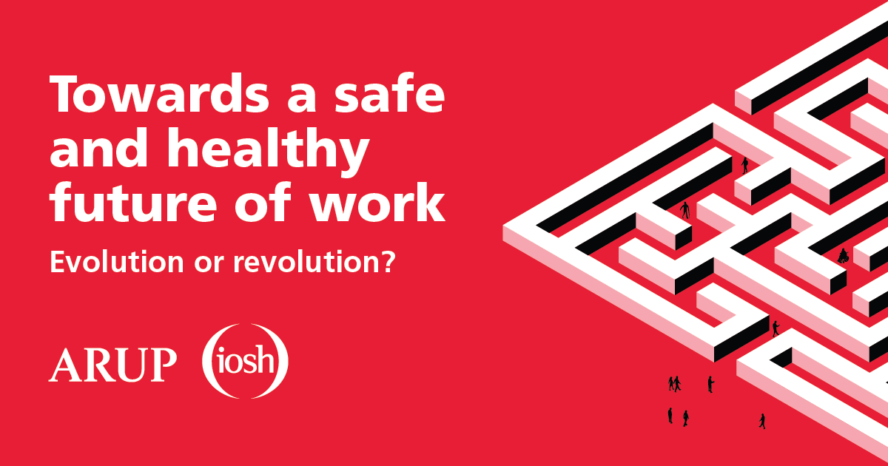

👋 Hi, my name's Taz and I'm a creative web developer based in London
Specializing in .NET and Umbraco with a lense prioritizing building modern and responsive websites. I’m passionate about creating engaging user interfaces that are fast, accessible, and easy to use. I have worked with various technologies and frameworks, such as JavaScript, jQuery, ASP.NET Core, Bootstrap, and C#. I’m always eager to learn new skills and explore new challenges in web development.
Portfolio
Institute of Occupational Health and Safety (IOSH)
Apr 2021 – June 2024Position: Frontend developer
Highlights:
-
Set up Cookies and extended functionality for Google Analytics to provide pivotal data needed for CRM which resulted in decreased bounce rates (10%).
-
Implemented urgent rebranding in line with changes to corporate branding within a short timeframe, improving UI and UX for our regular users and their journeys. Since the change, users have remained on the website for 12 seconds longer on average.
-
Encouraged auditing for improvements to the website: critical security exploits updates, strongly typed code to speed up website and better browser support, maintenance plan, web push, React. Contributed to monthly meetings with the wider team giving updates and answering questions with presentations.
-
Built new interactive templates to replace the website's PDF resources and created new infographics to generate a level system for PDF resources.
Pulse Graphics Ltd
May 2018 – 2021Position: Junior Frontend Developer
Highlights:
-
Translated design teams' UX wireframes and mockups into interactive features using HTML, CSS and JavaScript.
-
Designed and developed GUI for applications and modules using JavaScript.
-
Increased email sign-ups by over 10% by creating a new UI for a website landing page.
-
Applied international web standards (W3C) to promote consistency in the design code.
-
Conducted Browser and Device testing and debugging.
ZRNA Digital Solutions
Apr 2017 – Apr 2018Position: Junior User Experience Designer
Highlights:
-
Applied UX principles to create user-centric experiences in shaping and designing a website for a commercial insurance client.
-
Supported User Researchers by developing wireframes and clickable prototypes for customer testing.
-
Worked with cross-functional teams across technology and business to deliver the new website proposition.
Projects
Interactive templates
Background: for this project, I was tasked with creating web templates for my company as we wanted to shift away from PDF's and into something more web based and interactive. With the help of the web team and UX/UI designers I was given wireframes followed by feedback to code up the entire structure from scratch using C#, HTML, CSS3, JavaScript and jQuery alongside tools built into Umbraco backoffice.
This web application was also designed to give full freedom and flexibility to the content editors to design and curate content to suit their needs without having to have customization programmed in case-by-case. This was done using inbuilt tools provided by Umbraco (Block Grid editor) where I individually programmed each component for content editing based on how our PDF's are structured.
Certificate verification
Background: this was a mini project where necessary changes was required on the frontend of a pre-existing Stencil.js web component app to match new markup standards for our new website launch. The source code consists of mainly TypeScript, JavaScript, HTML, CSS and API requests.
The view was successfully updated. Alongside these changes, I was also tasked with creating a new form requesting validation for another type of certificate we offer with our courses. This was made from scratch using the inbuilt components in Stencil.js and a new query string that I created to call on existing data in the API webserver.
Upcoming

Fashion Blog: this upcoming project is a collaborative effort with an aspiring model trying to break into the industry and have a personal blog account to complement their video content.
Webstack
| Frontend | Backend | Misc |
| CSHTML | SQL | TypeScript |
| HTML5 | ASP.NET | Mobile |
| CSS3 | .NET6 | AGILE |
| JavaScript | Stencil.js | Git |
| jQuery | REST API | Gulp |
| React | JEST | |
| Angular | Umbraco | |
| SCSS | MVC | |
| LESS | Azure | |
| Tailwind CSS | CI/CD Pipeline | |
| Bootstrap |